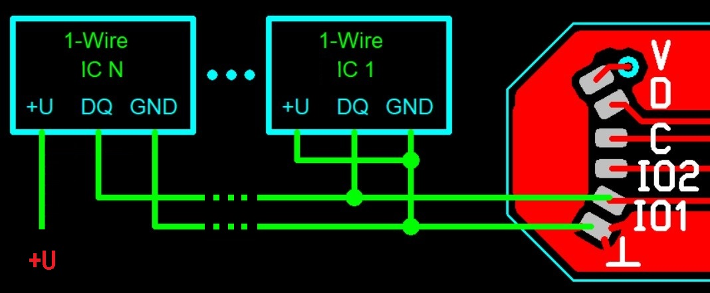
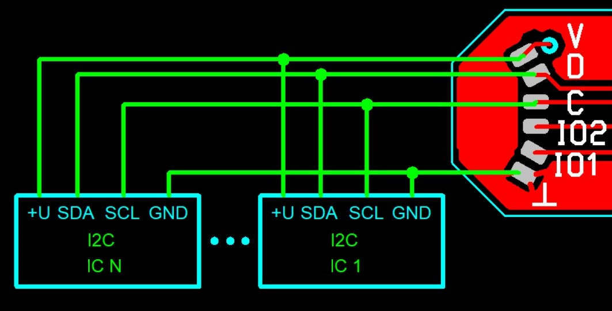
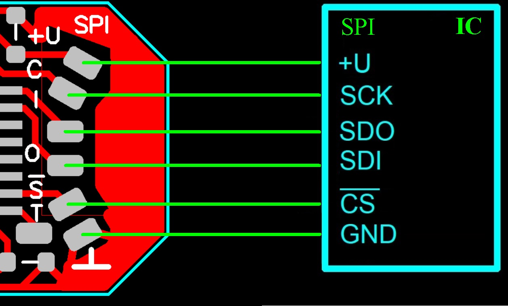

| Adapter net name |
Adapter pad marking |
Sensor pin name / variants |
| +U (+3V3) |
+U |
+U / Vdd |
| SCK |
C |
SCK / SCLK |
| MISO |
I |
SDO / DOUT |
| MOSI |
O |
SDI / DIN |
| ~SS |
~S |
~CS |
| GND |
_|_ |
GND |